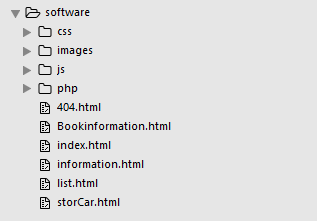

后台（java 和 PHP)

index.html [主页]
Bookinformation.html [书籍详细信息展示页面]
list.html [书籍分类界面]
404.html [响应失败页面]
storCar.html [购物车界面]
每个html 界面对应着相应的css 和 js ,有每个页面公用的 css 和 js 名为：share.js/css
前端 js 和后端交互接口介绍;js中有详细关于对后台所需东西的注释，所有请求都是Ajax请求
注册登录 ： login.js
然后share.js 是进行搜索框的查找进行模糊查询功能（数据库利用like % ），还有下拉列表的后台获取。
index .js 后台获取数据展示在界面上
list.js 是完成用户点击分类跳转到分类页面，根据用户点击的分类从后台获取然后动态加载到页面上，相关书籍从后台请求
bookinformation.js 相关书籍和本书籍从后台请求,
历史记录
逻辑整理
用户不进行登录也可以进行书籍等等的查看，当点击购物车和关于用户信息的字段事，进行提醒去注册、登录
主页点击相应书籍，进行跳转到相应的书籍详细介绍界面。
点击分类–>跳转分类界面
点击购物车–>跳转购物车界面（后台返回数据，js进行动态添加，如果没有显示没有的div）
每个界面都可以进行登录和注册